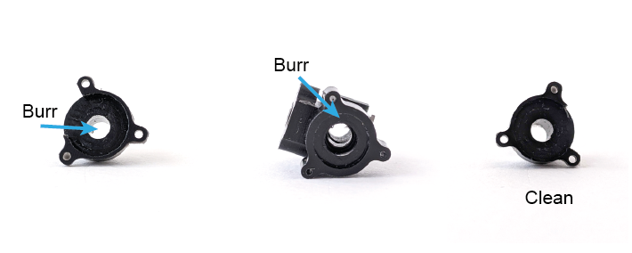
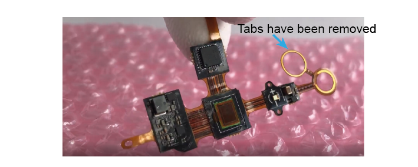

Assembling an OEPS V4.4 Miniscope¶

Acknowledgements¶
Daniel Aharoni, Federico Sangiuliano and the UCLA Miniscope Team)
See the Miniscope V4 Wiki for more information
Using the Miniscope¶
When assembling and using the Miniscope, please take care with the printed circuit board (pcb). The circuitry is exposed on the outside of the scope and can be damaged by electrostatic charges. Prevent this damage by not placing the scope on metal or other conductive surfaces and wearing electrostatic-safe gloves if possible. Make sure that the scope is not physically bumped during experiments; this may lead to damage or very brief power losses in the scope, during which the electrowettinglens can reset to 0, losing your plane of focus.
Tools and Materials¶
ESD gloves (to safely handle the PCB and keep lenses and filters clean)
Soft cloth (e.g. cloth to clean eyeglasses with)
Tweezers/forceps
Torx T2 screwdriver
Compressed air spray
Scalpel/Biopsy punch
Padded Vice
Epoxy (Overview by UCLA team here)
DAQ and Coax Cable
1. Prepare¶
a). Check all parts for any Delrin burrs sticking out. Scrape them off with a biopsy punch or tweezers.

2. Objective Module¶
a). Stand one of the 3x6 mm lenses on a flat surface. Make sure the lens is standing on its flat side- it should not wobble.
b). Place the objective module directly over the lens and push down. Make sure that you are pushing in a straight line onto the lens, as any angle can cause chipping. Make sure the lens is completely flush with the body and does not stick out.
3. Excitation Module¶
4. Emission Module¶
a). First, screw a self-threading screw into the hole on the side of the body, then remove the screw again. This is so that you can remove any small burrs that are generated by the self-threading screw. Hold the emission module up-side down and tap to get these burrs out of the body. You can spray compressed air through the module to make sure it is clean.
b). Find your 4mm, 10mm lens. This one has only a very slight curve at one edge, and should be placed with the curved edge down (in contrast to the objective module lenses). Stand the lens on a flat surface, with the curved edge down. If you press it, it should wobble.
c). Press the emission module down on top of this lens.
d). Once it is secure, you can turn the module upside down and, using a cloth on top of the lens, press to ensure the lens is as flush with the module as possible.
e). Next, place the dichroic filter in the slot on the side of the emission module. The arrow must be facing downwards, towards the 4mm lens.
f). Look through the top of the module to check that there are no burrs or pieces of visible dust in the scope so far.
g). If it looks clean, place the half-ball lens in the round pocket on the side of the body. Secure it in place by attaching the excitation module using two screws.
5. Assembly¶
a). Cut the extra tabs from the electrowettinglens PCB.
b). Screw the PCB to the excitation module using the two holes.
c). Carefully pre-bend the two circles in the PCB (do not press too hard, just gently shape them).
d). You can now put an EWL in between these circles and attach the objective module to the emission module. Check that the EWL is in the correct orientation.
e). Finally, use compressed air to clean out the sides of the pocket at the top of the scope. Place the 525 nm filter in the pocket, with the arrow pointing down.
f). Remove the protective film from the PCB and close the sensor over the top of the scope. You will probably have to hold the PCB in place while you do a first test of the scope.
6. Test before securing¶
a). Connect your Miniscope to a computer using a DAQ and a coaxial cable. Check that:
The EWL allows you to focus electronically.
The LED responds to you increasing/decreasing the value.
There are no visible specks on the image.
b). If the scope passes these tests, you can glue the PCB to the emission module. With the scope held in a vice, apply 5-min epoxy using a toothpick and leave to dry.
c). Once the epoxy is fully dry, screw in the PCB flaps.
Test the scope one final time, and you are ready to image!